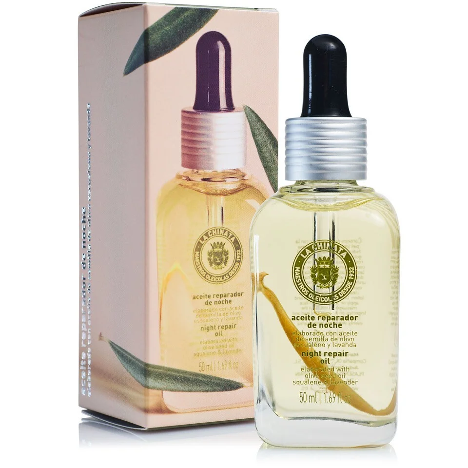

Cosmetic Made in Spain
聯繫我們
產品展示
La chinata夜间修护油

112 Kr 50ml
修护油在夜间起作用，因为皮肤在睡眠中自我修复，进入休息和细胞再生的阶段。因此，它可以起到抗氧化剂的作用，防止衰老迹象的出现，并为皮肤提供水分。 它是由特级初榨橄榄油制成的，它是一种很好的抗氧化剂和皮肤护发素，还有富含欧米茄6脂肪酸的月见草油，它能深层滋养皮肤，帮助组织再生，减少皮肤疲劳和衰老的迹象。 它还含有橄榄籽油，具有保湿和抗氧化的品质;含有葡萄籽油，可以修复，保湿和净化，还有薰衣草油，非常适合舒缓敏感或受刺激的皮肤。 结果是一个更滋养，水，休息和发光的皮肤。
Vida Copyright © 2024 All rights reserved